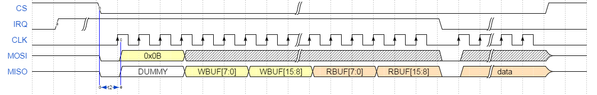

This document outlines the main specification for the SPI protocol to be used in the BlueNRG-LP/BlueNRG-LPS network coprocessor configuration.
The document content is valid for both BlueNRG-LP/BlueNRG-LPS devices.
The specification aims at achieving the following targets:
-
Very similar to BlueNRG-1, BlueNRG-2 protocol
-
Power efficient
-
Code efficient
-
Fast data transfer
BlueNRG-LP/BlueNRG-LPS Kit SPI protocol HW, SW configuration
- In order to use the BlueNRG GUI in SPI mode, with the BlueNRG-LP/BlueNRG-LPS kit platform modified for the standalone network coprocessor configuration, the following steps must be followed:
-
Update the BlueNRG-LP/BlueNRG-LPS firmware to the latest version of DTM - SPI mode (DTM_SPI.hex available on BlueNRG-LP/BlueNRG-LPS, STSW-BNRGLP-DK SW package folders: Firmware\BLE_Examples\DTM\{STEVAL-IDB011V1|STEVAL-IDB012V1}) by using the "Drag-and-Drop" upgrade capability or the RF-Flasher PC utility.
-
Open the latest available BlueNRG GUI PC application
SPI protocol hardware details
- The SPI port requires five pins:
-
SPI CLK
-
SPI MOSI
-
SPI MISO
-
SPI CS
-
SPI IRQ
- The maximum SPI baud rate supported is 6 MHz. The timing diagram adopted is CPOL 1 and CPHA 1, which means data are captured on the SPI clock's rising edge and data is output on a rising edge. The SPI CS acts also as wake up pin for the BlueNRG-LP/BlueNRG-LPS, so that if the SPI CS pin is low (external uC select the BlueNRG-LP/BlueNRG-LPS for communication) the BlueNRG-LP/BlueNRG-LPS is woken up if it was asleep.The BlueNRG-LP notifies event pending to the external uC through the SPI IRQ pin. If the SPI IRQ pin is high, the BlueNRG-LP/BlueNRG-LPS has at least an event for the external uC.
|
|
| Table 1: BlueNRG-LP SPI lines |
- NOTE: BlueNRG-LPS SPI lines:
-
SPI MOSI: PA11
-
SPI MISO: PA8
-
SPI CLOCK: PA3 (on current STEVAL-IDB012V1 alpha kit (JP3, pin1): to be remapped to PB3 on official kit)
-
SPI CS: PA9
-
SPI IRQ: PA10
SPI communication protocol
- To communicate with the BlueNRG-LP/BlueNRG-LPS, the data on the SPI bus must be formatted as described in this section. An SPI transaction is defined from a rising edge of the SPI CS signal to the next rising edge of the SPI CS signal. Each SPI transaction must contain only one data frame. Each data frame should contain at least 5 bytes of header, and may have from 0 to N bytes of data.
Generic transaction
|
|
| Figure 1: Generic SPI transaction |
- Figure 1 shows a generic SPI transaction, the list of steps is as follow:
-
The external uC lowers the SPI CS signal to start the communication
-
The BlueNRG-LP/BlueNRG-LPS raises the SPI IRQ signal to indicate that it is ready for the communication. The time t1 change according to the state of the BlueNRG-LP/BlueNRG-LPS. This time t1 can include wake up of the BlueNRG-LP/BlueNRG-LPS and preparation of the header part of the frame.
-
The external uC must wait for the SPI IRQ signal to become high and then start to transfer the five bytes of the header that include the control field with the intended operation.In addition, the external uC read five bytes from the BlueNRG-LP/BlueNRG-LPS, which includes information about the actual size of the read buffer and of the write buffer.
-
The external uC, after checking the 5 bytes of header, will perform data transaction.
-
The BlueNRG-LP/BlueNRG-LPS will lower SPI IRQ signal after the five bytes header are transferred.
-
The external uC waits the SPI IRQ is low before raise the SPI CS signal to mark the end of the communication.
- Some important notes are:
-
Setting the SPI CS signal low will wake up BlueNRG-LP/BlueNRG-LPS if the device is asleep.
-
If the SPI IRQ signal is low before setting the SPI CS signal low, this means the BlueNRG-LP/BlueNRG-LPS has no data events for the external uC, so the read buffer size is zero (RBUF=0).
-
The time t1 is the time between wake-up (point a in Figure 1) and the BlueNRG-LP/BlueNRG-LPS being ready to perform the SPI transaction (point b in Figure 1). The time t1 ranges is from minimal value (the BlueNRG-LP/BlueNRG-LPS already awake when the SPI CS is asserted), to a maximum value that involves wake-up sequence and software boot.
-
Even if there are events pending after the completion of the transaction, the SPI IRQ signal will go low to allow the BlueNRG-LP/BlueNRG-LPS updating the five bytes header an rearming the SPI for next transaction (after this delay the SPI IRQ signal will go high again if events are pending).
-
The SPI CS signal marks the begin and end of the transaction
-
The SPI CS high marks the end of the transaction and must be set to high only when IRQ line is low.
-
The gap between the header and the data is not mandatory, but it is normally required by the external uC to process the header and check if there is enough space in the buffers to perform the wanted transaction.
-
When the SPI IRQ signal is high, the five bytes header are locked and cannot be modified by BlueNRG-LP/BlueNRG-LPS firmware.
Header
|
|
|
| Figure 2: SPI header format |
- The header of the external uC (the SPI master) is on the MOSI line, which is composed by one control byte (CTRL) and four bytes 0x00. CTRL field can have only the value of 0x0A (SPI write) or 0x0B (SPI read). The BlueNRG-LP/BlueNRG-LPS returns the header on the MISO line at the same time. When the BlueNRG-LP/BlueNRG-LPS asserts the SPI IRQ signal, it is ready. Otherwise, the BlueNRG-LP/BlueNRG-LPS is still not initialized. External uC must wait for the IRQ line to become high and perform a five bytes transaction. The 5 bytes in the MISO line gives one byte of starting frame, two bytes with the size of the write buffer (WBUF) and two bytes with the size of the read buffer (RBUF). The endianness for WBUF and RBUF is LSB first. The value in WBUF means how many bytes the master can write to the BlueNRG-LP/BlueNRG-LPS. The value in RBUF means how many bytes in the BlueNRG-LP/BlueNRG-LPS are waiting to be read by the external uC.
Read transaction
- A read transaction is performed when the BlueNRG-LP/BlueNRG-LPS raises the SPI IRQ line before the SPI CS signal is lowered by the external uC.
|

|
| Figure 3: SPI Read transaction |
- In this case, the SPI IRQ signal is high indicating the BlueNRG-LP/BlueNRG-LPS is awake and ready to perform the SPI transaction, after a hardware dependent setup time t2, typical value is 1.5 us. The transaction will be performed as follow:
-
An event has been generated by the BlueNRG-LP/BlueNRG-LPS (point a in Figure 3)
-
The external uC lower the SPI CS signal to initiate a transaction (point b in Figure 3)
-
Since the SPI IRQ signal is high, the external uC initiate a data transfer after t2. The external uC will transfer five bytes as follow [0x0B, XX, XX, XX, XX]. The WBUF and RBUF sizes are read from the SPI MISO signal.
-
The external uC will perform the read data transaction for RBUF bytes. (Note: if RBUF is 0, this is an unexpected condition since the BlueNRG-LP/BlueNRG-LPS is indicating that data is available, in any case the transaction needs to be completed by reading no bytes).
-
The BlueNRG-LP/BlueNRG-LPS will lower SPI IRQ signal after the five bytes header are transferred.
-
The external uC will raise the SPI CS signal to mark the end of the transaction.
Write transaction
- A write transaction is performed by the external uC to send a command to the BlueNRG-LP/BlueNRG-LPS. The BlueNRG-LP/BlueNRG-LPS can be awake or sleeping when the SPI CS signal is lowered by the external uC. The assertion of the SPI CS signal will wakeup the BlueNRG-LP/BlueNRG-LPS, if asleep.
|
|
| Figure 4: SPI Write transaction |
- The transaction will be performed as follow:
-
The external uC lower the SPI CS signal to initiate a transaction.
-
The BlueNRG-LP/BlueNRG-LPS raises the SPI IRQ signal to indicate that is ready with t1 >= 0.
-
The external uC waits for SPI IRQ signal to become high and start a transfer of five bytes sending the code of the intended operation and reading the read buffer and write buffer size. The external uC will transfer five bytes as follow [0x0A, XX, XX, XX, XX]. The WBUF and RBUF values are sampled in the SPI MISO signal.
-
The BlueNRG-LP/BlueNRG-LPS will lower the SPI IRQ after the five bytes header are transferred.
-
The external uC checks whether the WBUF allow sending the command. If yes, it will perform the data transaction, otherwise the external uC must waits.
-
The external uC will wait for the SPI IRQ signal to be low before close the communication.
-
The external uC will raise the SPI CS to mark the end of the transaction.
Error transaction
- This section list the BlueNRG-LP/BlueNRG-LPS firmware behavior when some error transactions are performed:
SPI state machine
- Here after the description of the BlueNRG-LP/BlueNRG-LPS SPI state machine.
|
|
| Table 2: BlueNRG-LP/BlueNRG-LPS SPI state machine states |
|
|
| Figure 5: SPI protocol state machine |
External uC behavior
- The external uC must act as follows according to the information from the BlueNRG-LP/BlueNRG-LPS:
-
SPI IRQ signal
-
information from header frame WBUF and RBUF.
|
|
| Table 3: BlueNRG-LP/BlueNRG-LPS SPI inputs |
|
|
| Figure 6: Expected uC SPI protocol state machine |
Waveform acquisition
|
|
| Figure 7: HCI_READ_LOCAL_VERSION_INFORMATION SPI waveform |
|
|
| Figure 8: HCI_READ_LOCAL_VERSION_INFORMATION SPI waveform zoom |
|
|
| Figure 9: HCI_COMMAND_COMPLETE_EVENT SPI waveform |

 1.8.10
1.8.10